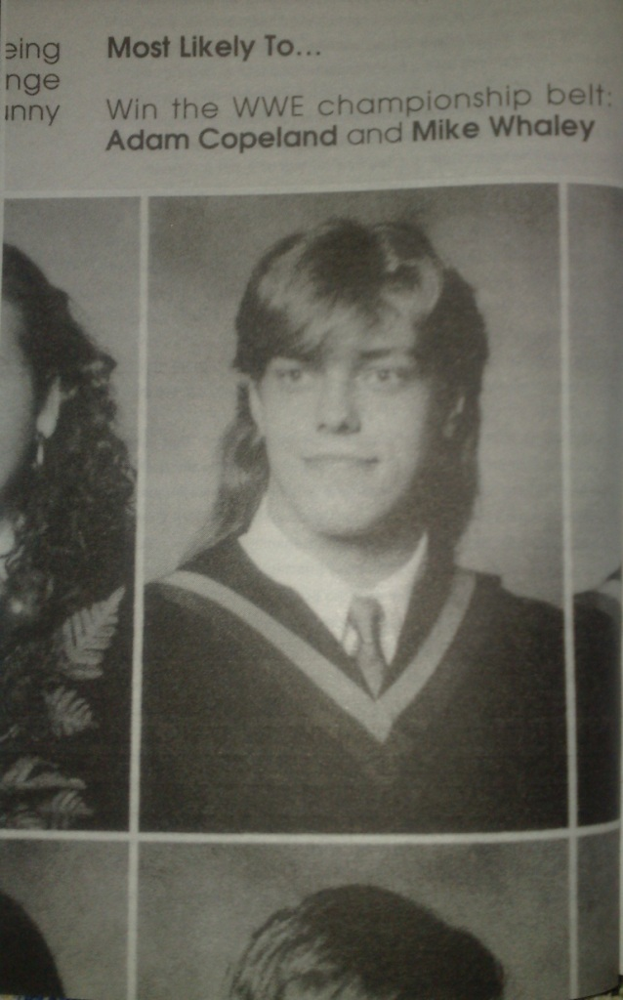

Глава 7
Перевод Тани (Dark Bird) для VSplanet.net
Шло время. После двух последних лет отшельничества в государственной школе было самое время двигаться дальше и стать отшельником в средней школе. Конечно, средняя школа, и все с ней связанное, пугала меня. Я был одиночкой и интравертом, и средняя школа подлила масла в огонь. Я был высокий, худой, и носил в полной сохранности маллет. (прим. перевод. — Маллет (англ. mullet) — это тип причёски, в котором волосы подстрижены коротко спереди и по бокам, а сзади они остаются длинными.) Расслабьтесь, на тот момент маллеты были модными (как и когда-то, так и до сих пор они [длинные волосы] со мной). Джей был всё ещё моим единственным настоящим другом, и наша жизнь вращалась вокруг рестлинга и скейтбординга.
Всё ещё очень неловкий и запуганный, в 9-м классе я стал мишенью для группы хулиганов. Они решили сделать мой ранний подростковый возраст адом (по крайней мере, так мне казалось в то время). Следующая сцена может быть использована в любом подростковом фильме о старшей школе. К сожалению, это случилось со мной.
Однажды, стоя у моего шкафчика, я обернулся и обнаружил себя окруженным. Меня бросили к шкафчику и ударили кулаком в подбородок. До этого момента я никогда не участвовал в том, что можно назвать настоящей дракой. И это не изменилось по сей день. Их было трое и только один младше меня.
Джей был в другом конце школы, и не было никого, кто бы прикрыл мою спину. Ну и что же я сделал? Абсолютно ничего. Я стоял с ужасным чувством в моём животе, униженный, посреди коридора. В тот день я сказал себе, что никогда не буду чувствовать себя так еще раз. И не чувствовал.
Странным образом этот инцидент, а также всё, что случилось прежде, мотивировало меня. Это мотивировало меня пойти в спортзал. Это побудило меня немного выползти из своей раковины. Самое главное, это подтолкнуло меня к моей цели стать рестлером. Я знаю, это звучит как какая-то мотивационная речь или рекламный ролик Тони Роббинса (прим. первод. — Энтони Роббинс — автор книг и передач по самосовершенствованию и мотивации), но это то, что заставило меня проснуться и принять твёрдое решение. Теперь, не поймите меня неправильно, я всё ещё не был Рокки Бальбоа, тренирующимся в русской избе для боя против Ивана Драго, но это зажгло огонь под моей узкой задницей.
К счастью, судьба была благосклонна, как это случится так много раз в будущем. Перейдя в 10-й класс, я получил скачок роста и прибавил в весе. Половое созревание меня пожалело. Я вырос с 175 до 188 сантиметров и вместе с Джеем присоединился к клубу по боксу Оранджвилля. Не совсем случайно эти хулиганы перестали меня беспокоить, забавно, как это получилось. В конце концов, я бил стену на боксёрских тренировках. Мои тренеры хотели, чтобы я держал свой вес в районе 72.5 кг при росте 188 см. Это позволило бы мне достичь огромного преимущества над большей частью моей весовой категории, но из-за этого я бы также мог напоминать дерево. Я уже вовсю «болел» рестлингом, поэтому я вежливо попрощался и покинул тренажерный зал. Мало-помалу я вырос до 193 см и потяжелел до 91 кг.
Я всё ещё чувствовал себя пугалом, но я нашел свою дорогу. Джей присоединился ко мне в тренажерном зале, где мы также подружились с Ником Цветковичем, Джоном Посаваком и Джонни Ньютоном. Мы были друзьями в течение некоторого времени, и в тренажерном зале, и в школе мы стали известны как Getalong Gang (прим. перевод. — не знаю, имеет ли это название какое-то отношение к мультфильму 80-х годов The Get Along Gang (Дружная Банда)). Папе Ника, Майку, принадлежал тренажерный зал, Оранджвилльский сквош (прим. перевод. — игра в мяч типа тенниса) и фитнес-центр. Нашим привычным делом стали тренировки каждый день. Если на платном спутнике был матч Мировой Федерации Рестлинга, у нас был близко тренажерный зал, чтобы посмотреть его, а затем пойти в зал и повыбивать друг из друга дух.
Тренажерный зал находился на окраине города, но я ходил туда каждый день. Один час туда, поработал, один час назад, и поверьте мне, потеть в канадскую зиму — дело малоприятное. К счастью, мой кассетный аудиоплеер (CD-плееры были тогда еще редкостью) помогал убить время. Иногда мне везло, и Джон брал старый Додж Аспен своей мамы, приезжал и забирал меня. Когда Джей получил права, он подвозил меня в пикапчике своих родителей. Ресо владели магазином спортивных товаров, поэтому фургон использовался для целей магазина. К тому времени мы с мамой переехали в квартиру получше, но к дому Джей должен был подъезжать с заднего двора. Как-то он начал там разворачиваться, и только я сказал: «Будь осторожен, здесь узко», БААААМ! и бок фургона врезался в угол здания. Джей моментально взмок. Его папа, Рэнди, был очень жестким серьезным, хотя и справедливым человеком. В молодости он был достаточно успешным пауэрлифтером, так что Джей реально испугался. Ресо — большая семья, и прощала Джею довольно легко, но только не начало водительской карьеры. Поверьте мне, он и до сих пор водит не очень хорошо.
В средней школе я также играл в бейсбол, футбол, волейбол и баскетбол. У нас не было футбольной команды: давайте смотреть правде в глаза, ничто не может заменить хоккей в Канаде. Я почувствовал, что вынужден бросить ещё один вид спорта. На этот раз это был баскетбол, и это было не из-за требования поддерживать определенный вес. О, нет, на этот раз ультиматум было подстричь волосы. Я не понимал, как мои волосы влияли на мою игру — просто спросите Стива Нэша и Дирка Новитцки — в результате я ушел. Я знал, рестлинг был для меня, и буду честен, прыгал я пониже, чем Винс Картер.
В то время мы с Джеем посещали все шоу в Maple Leaf Gardens. Однажды нам повезло с местами прямо у ринга. Мы навсегда запомнили эти номера и каждый раз просили эти места. У нас не было кредитной карточки, так что мама Джея брала билеты по своей кредитке, а я со временем возвращал ей долг (если я что-то недовыплатил, Кэрол, дайте мне знать!)
MLG избавились от классической рампы, но это просто означало, что мы могли пожать руку рестлерам. Мы знали, где и когда рестлеры покидают здание, так что мы иногда пытались завязать с рестлерами разговор. Мы всегда были очень вежливы, но обычно от нас отмахивались, но в один прекрасный день Брайан Адамс и Барри Дарсоу, более известные как Смэш и Краш из Demolition с нами заговорили (кто тогда знал, что мы выиграем намного больше, чем четыре их командных титула?) Я всегда стараюсь помнить это, особенно сейчас. (Мы как-то напомнили Брайану эту историю, он почувствовал себя ужасно старым, но я понял, как следует относиться к болельщикам. Брайан в настоящее время проживает на той же улице, что и я, и он все еще крутой исполнитель. Удивительная штука — жизнь.)
Полной противоположностью в плане отношения к фанатам был Тони Атлас, которого мы несколько раз встречали на местных шоу. Он теперь вернулся в WWF, как Саба Симба. Мы видели его раньше на шоу и крикнули: «Привет, Тони!» Мы кричали и махали руками, называли его и Атлас, и Симба, но он полностью игнорировал нас. Он не спешил, он просто стоял в коридоре и всё. Тот день научил меня, как не надо относиться к фанам. Спасибо за это, Тони.

Я в школьном альбоме